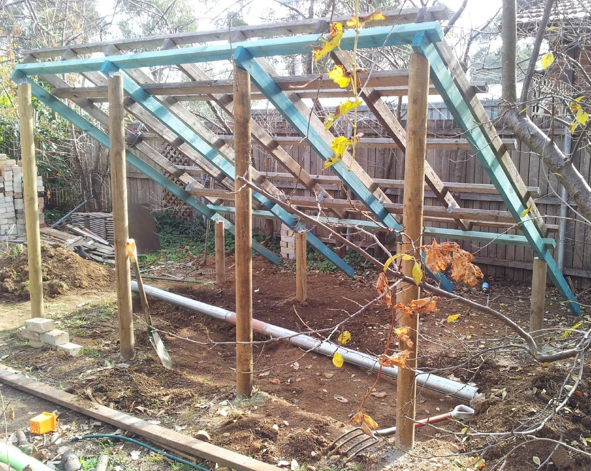
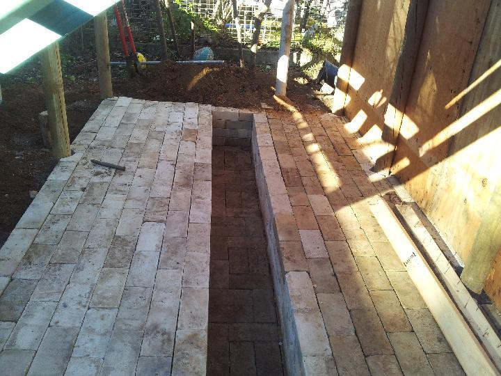
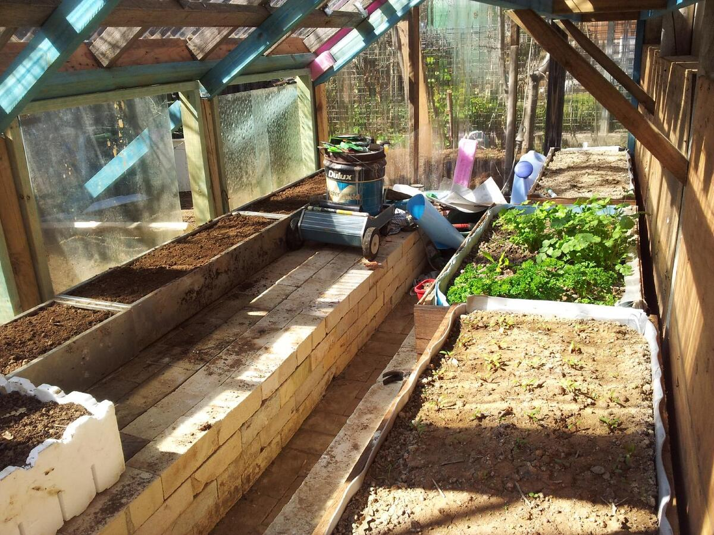
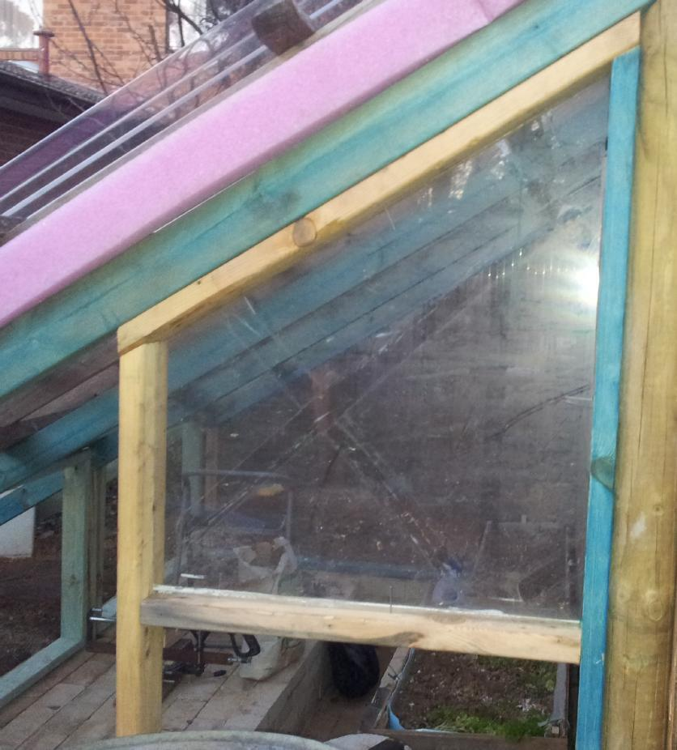
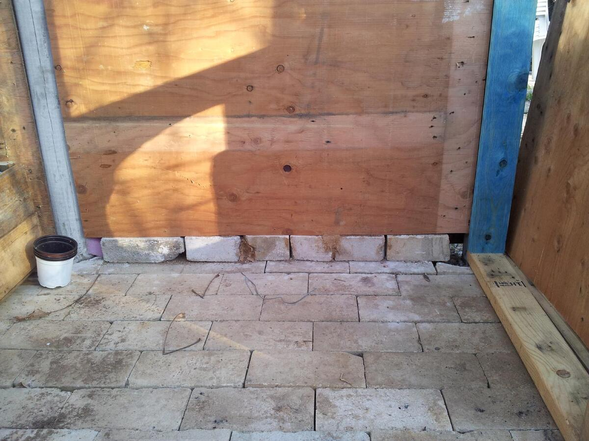
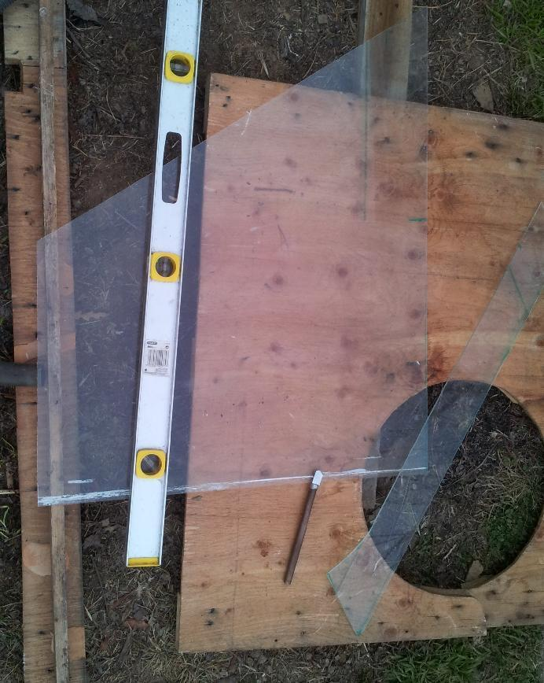
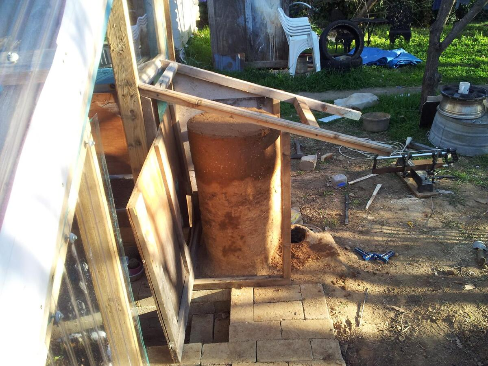
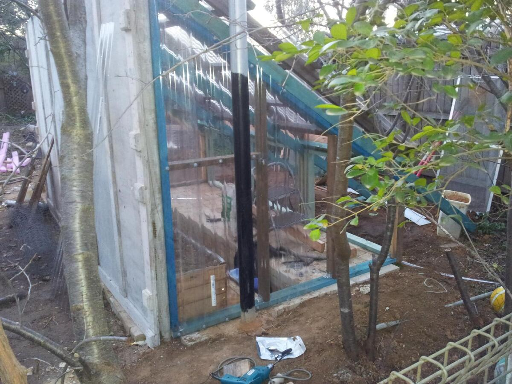
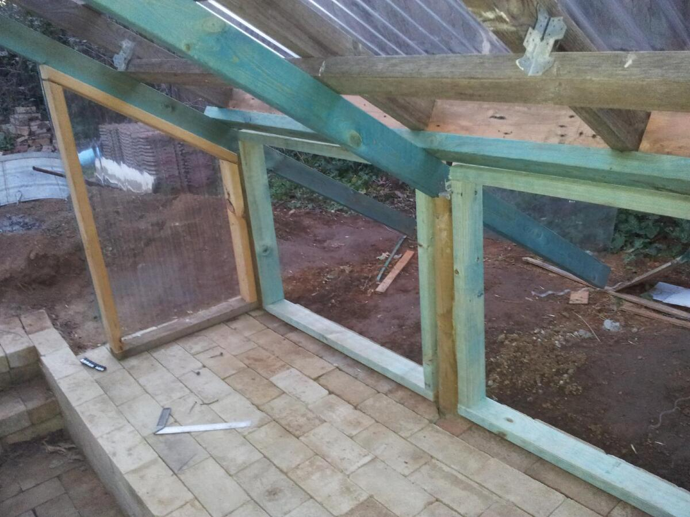
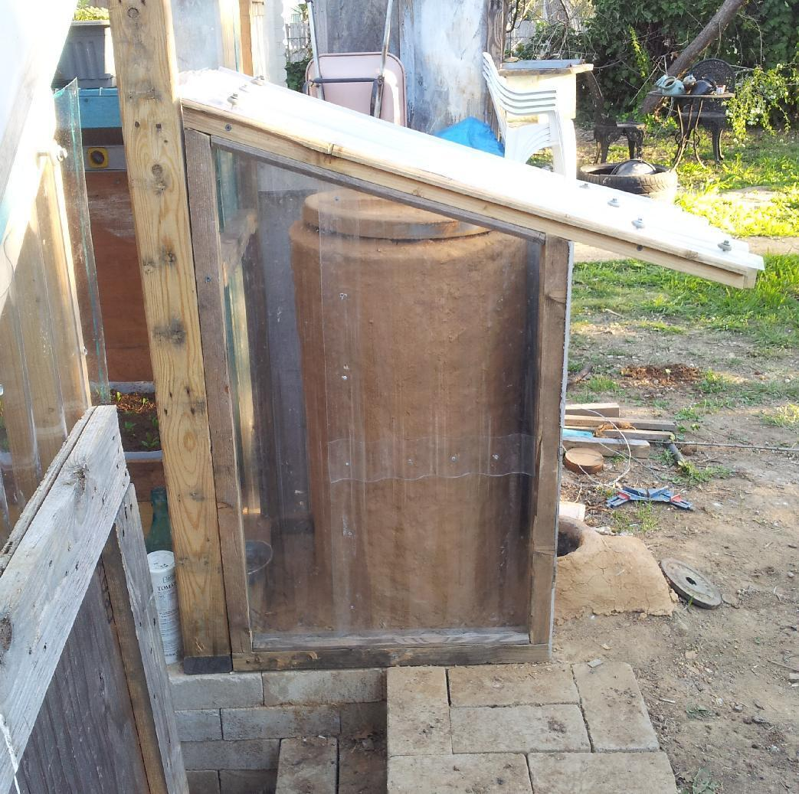

Gardening in Canberra is impeded by short growing seasons; early, and heavy frost in Winter, and Dry, hellish heat in Summer. A greenhouse ameliorates the problem to some extent, but is not necessarily a cost-effective solution. This project sought to overcome some of the difficulties whilst optimising design and making effective use of salvaged materials.
The design (improvised during construction) features a steeply sloping roof to optimise winter light path and water-runoff. A sunken walkway serves to provide good clearance between one's head, and the roof. Additionally, it serves as a `cold-sink' to facilitate warming. The rear wall was constructed from 12-ply that had been recoved from a Cray-Urika freight container. Inside the greenhouse, the lower part of the wall was reinforced with framing timber, and the cavity was filled with plastic-contained soil to provide thermal mass.
A rocket heater and cob-based thermal-mass heater were incorporated into the design and planer boxes were constructed from a combination of waste or new materials as circumstances dictated. These are discussed elsewhere.

Supports made from CCA-treated pine. Framing timber ws used to build joists. Rafters and batterns were reclaimed from an old shed that, rather ironically, had been built from reclaimed materials but was demolished to make way for another structure.








